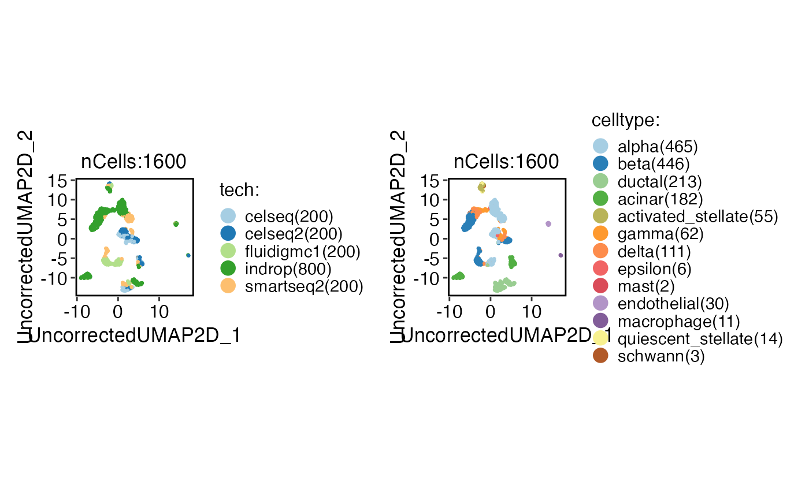
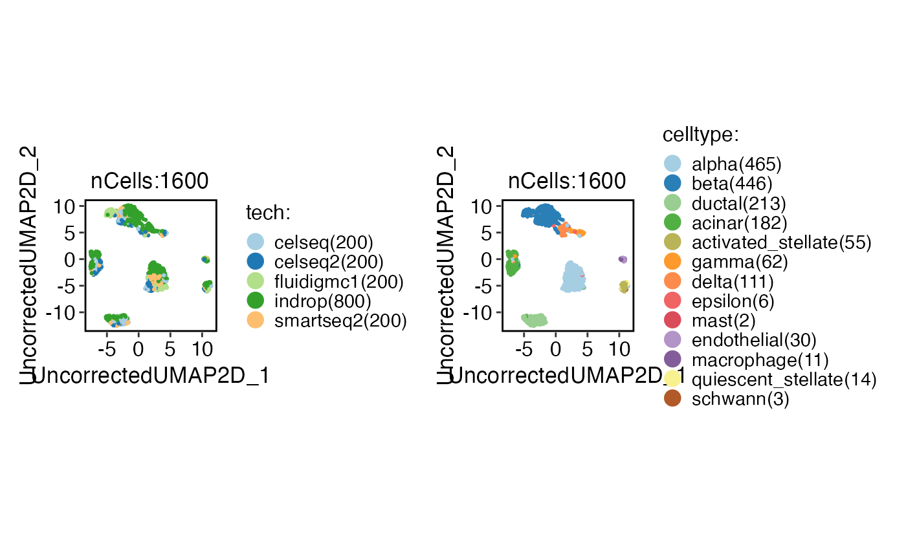
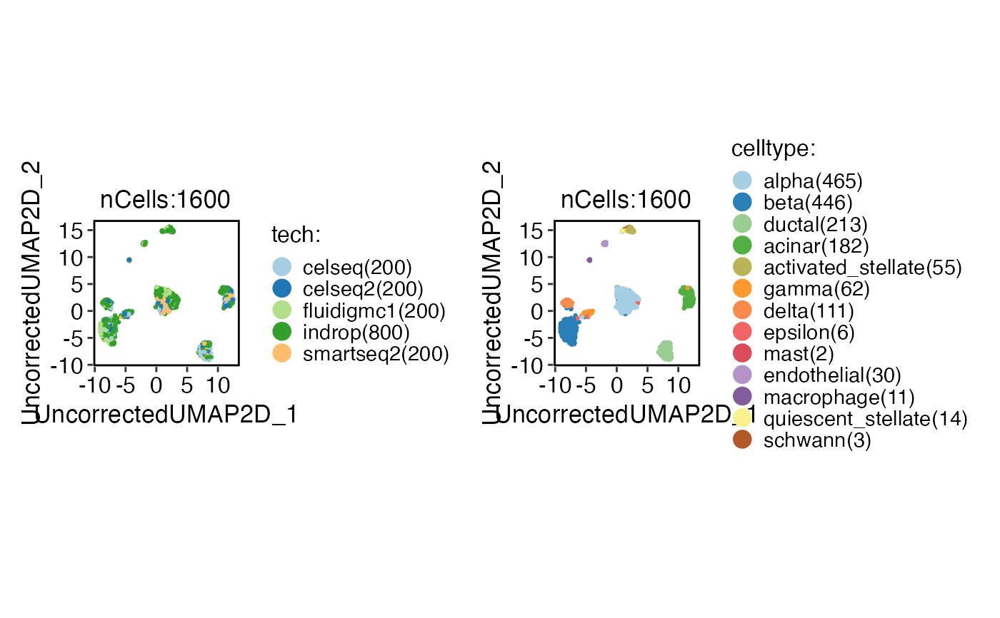
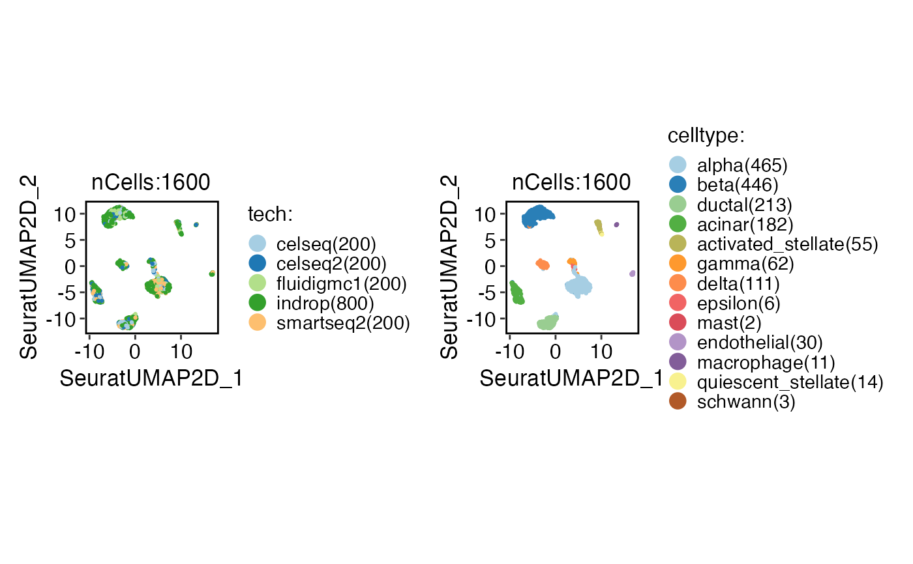
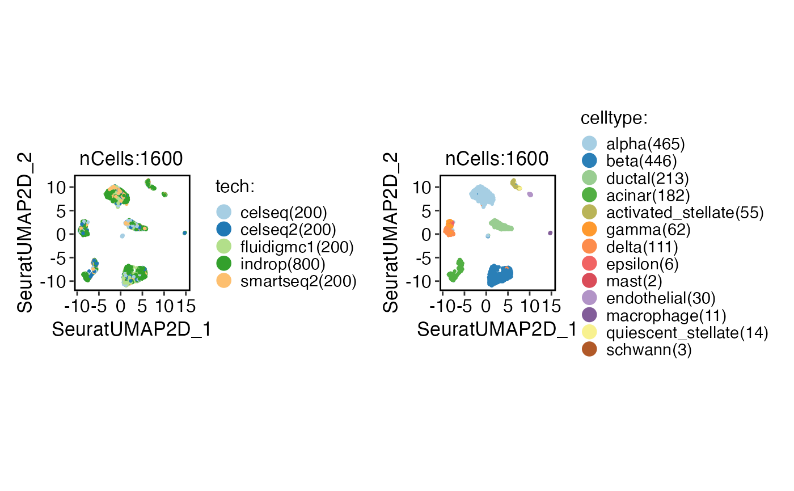

Integrate single-cell RNA-seq data using various integration methods.
Integration_scop(
srtMerge = NULL,
batch,
append = TRUE,
srtList = NULL,
assay = NULL,
integration_method = "Uncorrected",
do_normalization = NULL,
normalization_method = "LogNormalize",
do_HVF_finding = TRUE,
HVF_source = "separate",
HVF_method = "vst",
nHVF = 2000,
HVF_min_intersection = 1,
HVF = NULL,
do_scaling = TRUE,
vars_to_regress = NULL,
regression_model = "linear",
scale_within_batch = FALSE,
linear_reduction = "pca",
linear_reduction_dims = 50,
linear_reduction_dims_use = NULL,
linear_reduction_params = list(),
force_linear_reduction = FALSE,
nonlinear_reduction = "umap",
nonlinear_reduction_dims = c(2, 3),
nonlinear_reduction_params = list(),
force_nonlinear_reduction = TRUE,
neighbor_metric = "euclidean",
neighbor_k = 20L,
cluster_algorithm = "louvain",
cluster_resolution = 0.6,
seed = 11,
...
)A merged Seurat object that includes the batch information.
A character string specifying the batch variable name.
Logical, if TRUE, the integrated data will be appended to the original Seurat object (srtMerge).
A list of Seurat objects to be checked and preprocessed.
The name of the assay to be used for downstream analysis.
A character string specifying the integration method to use.
Supported methods are: "Uncorrected", "Seurat", "scVI", "MNN", "fastMNN", "Harmony",
"Scanorama", "BBKNN", "CSS", "LIGER", "Conos", "ComBat". Default is "Uncorrected".
A logical value indicating whether data normalization should be performed.
The normalization method to be used. Possible values are "LogNormalize", "SCT", and "TFIDF". Default is "LogNormalize".
A logical value indicating whether highly variable feature (HVF) finding should be performed. Default is TRUE.
The source of highly variable features. Possible values are "global" and "separate". Default is "separate".
The method for selecting highly variable features. Default is "vst".
The number of highly variable features to select. Default is 2000.
The feature needs to be present in batches for a minimum number of times in order to be considered as highly variable. The default value is 1.
A vector of highly variable features. Default is NULL.
A logical value indicating whether to perform scaling. If TRUE, the function will force to scale the data using the ScaleData function.
A vector of variable names to include as additional regression variables. Default is NULL.
The regression model to use for scaling. Options are "linear", "poisson", or "negativebinomial" (default is "linear").
Whether to scale data within each batch. Only valid when the integration_method is one of "Uncorrected", "Seurat", "MNN", "Harmony", "BBKNN", "CSS", "ComBat".
The linear dimensionality reduction method to use. Options are "pca", "svd", "ica", "nmf", "mds", or "glmpca" (default is "pca").
The number of dimensions to keep after linear dimensionality reduction (default is 50).
The dimensions to use for downstream analysis. If NULL, all dimensions will be used.
A list of parameters to pass to the linear dimensionality reduction method.
A logical value indicating whether to force linear dimensionality reduction even if the specified reduction is already present in the Seurat object.
The nonlinear dimensionality reduction method to use. Options are "umap","umap-naive", "tsne", "dm", "phate", "pacmap", "trimap", "largevis", or "fr" (default is "umap").
The number of dimensions to keep after nonlinear dimensionality reduction. If a vector is provided, different numbers of dimensions can be specified for each method (default is c(2, 3)).
A list of parameters to pass to the nonlinear dimensionality reduction method.
A logical value indicating whether to force nonlinear dimensionality reduction even if the specified reduction is already present in the Seurat object.
The distance metric to use for finding neighbors. Options are "euclidean", "cosine", "manhattan", or "hamming" (default is "euclidean").
The number of nearest neighbors to use for finding neighbors (default is 20).
The clustering algorithm to use. Options are "louvain", "slm", or "leiden" (default is "louvain").
The resolution parameter to use for clustering. Larger values result in fewer clusters (default is 0.6).
An integer specifying the random seed for reproducibility. Default is 11.
Additional arguments to be passed to the integration method function.
A Seurat object.
data("panc8_sub")
panc8_sub <- Integration_scop(
srtMerge = panc8_sub, batch = "tech",
integration_method = "Uncorrected"
)
#> [2024-11-18 15:22:56.717266] Start Uncorrected_integrate
#> [2024-11-18 15:22:56.719921] Spliting srtMerge into srtList by column tech... ...
#> [2024-11-18 15:22:56.832883] Checking srtList... ...
#> Data 1/5 of the srtList is raw_normalized_counts. Perform NormalizeData(LogNormalize) on the data ...
#> Perform FindVariableFeatures on the data 1/5 of the srtList...
#> Data 2/5 of the srtList is raw_normalized_counts. Perform NormalizeData(LogNormalize) on the data ...
#> Perform FindVariableFeatures on the data 2/5 of the srtList...
#> Data 3/5 of the srtList is raw_normalized_counts. Perform NormalizeData(LogNormalize) on the data ...
#> Perform FindVariableFeatures on the data 3/5 of the srtList...
#> Data 4/5 of the srtList is raw_counts. Perform NormalizeData(LogNormalize) on the data ...
#> Perform FindVariableFeatures on the data 4/5 of the srtList...
#> Data 5/5 of the srtList is raw_counts. Perform NormalizeData(LogNormalize) on the data ...
#> Perform FindVariableFeatures on the data 5/5 of the srtList...
#> Use the separate HVF from srtList...
#> Number of available HVF: 2000
#> [2024-11-18 15:22:59.545742] Finished checking.
#> [2024-11-18 15:23:00.035338] Perform integration(Uncorrected) on the data...
#> [2024-11-18 15:23:00.035423] Perform ScaleData on the data...
#> [2024-11-18 15:23:00.696868] Perform linear dimension reduction (pca) on the data...
#> Warning: The following arguments are not used: force.recalc
#> Warning: The following arguments are not used: force.recalc
#> [2024-11-18 15:23:02.087922] Perform FindClusters (louvain) on the data...
#> [2024-11-18 15:23:02.168696] Reorder clusters...
#> [2024-11-18 15:23:02.278527] Perform nonlinear dimension reduction (umap) on the data...
#> Non-linear dimensionality reduction(umap) using Reduction(Uncorrectedpca, dims:1-10) as input
#> Found more than one class "dist" in cache; using the first, from namespace 'BiocGenerics'
#> Also defined by ‘spam’
#> Found more than one class "dist" in cache; using the first, from namespace 'BiocGenerics'
#> Also defined by ‘spam’
#> Non-linear dimensionality reduction(umap) using Reduction(Uncorrectedpca, dims:1-10) as input
#> Found more than one class "dist" in cache; using the first, from namespace 'BiocGenerics'
#> Also defined by ‘spam’
#> Found more than one class "dist" in cache; using the first, from namespace 'BiocGenerics'
#> Also defined by ‘spam’
#> [2024-11-18 15:23:07.236122] Uncorrected_integrate done
#> Elapsed time: 10.52 secs
CellDimPlot(panc8_sub, group.by = c("tech", "celltype"))
#> Warning: No shared levels found between `names(values)` of the manual scale and the data's fill values.
#> Warning: No shared levels found between `names(values)` of the manual scale and the data's fill values.

panc8_sub <- Integration_scop(
srtMerge = panc8_sub, batch = "tech",
integration_method = "Uncorrected",
HVF_min_intersection = 5
)
#> [2024-11-18 15:23:07.404116] Start Uncorrected_integrate
#> [2024-11-18 15:23:07.406482] Spliting srtMerge into srtList by column tech... ...
#> [2024-11-18 15:23:07.633218] Checking srtList... ...
#> Data 1/5 of the srtList has been log-normalized.
#> Perform FindVariableFeatures on the data 1/5 of the srtList...
#> Data 2/5 of the srtList has been log-normalized.
#> Perform FindVariableFeatures on the data 2/5 of the srtList...
#> Data 3/5 of the srtList has been log-normalized.
#> Perform FindVariableFeatures on the data 3/5 of the srtList...
#> Data 4/5 of the srtList has been log-normalized.
#> Perform FindVariableFeatures on the data 4/5 of the srtList...
#> Data 5/5 of the srtList has been log-normalized.
#> Perform FindVariableFeatures on the data 5/5 of the srtList...
#> Use the separate HVF from srtList...
#> Number of available HVF: 264
#> [2024-11-18 15:23:10.108099] Finished checking.
#> [2024-11-18 15:23:10.547802] Perform integration(Uncorrected) on the data...
#> [2024-11-18 15:23:10.547881] Perform ScaleData on the data...
#> [2024-11-18 15:23:11.119654] Perform linear dimension reduction (pca) on the data...
#> Warning: The following arguments are not used: force.recalc
#> Warning: The following arguments are not used: force.recalc
#> [2024-11-18 15:23:11.685969] Perform FindClusters (louvain) on the data...
#> [2024-11-18 15:23:11.768964] Reorder clusters...
#> [2024-11-18 15:23:11.797522] Perform nonlinear dimension reduction (umap) on the data...
#> Non-linear dimensionality reduction(umap) using Reduction(Uncorrectedpca, dims:1-11) as input
#> Found more than one class "dist" in cache; using the first, from namespace 'BiocGenerics'
#> Also defined by ‘spam’
#> Found more than one class "dist" in cache; using the first, from namespace 'BiocGenerics'
#> Also defined by ‘spam’
#> Non-linear dimensionality reduction(umap) using Reduction(Uncorrectedpca, dims:1-11) as input
#> Found more than one class "dist" in cache; using the first, from namespace 'BiocGenerics'
#> Also defined by ‘spam’
#> Found more than one class "dist" in cache; using the first, from namespace 'BiocGenerics'
#> Also defined by ‘spam’
#> [2024-11-18 15:23:16.451408] Uncorrected_integrate done
#> Elapsed time: 9.05 secs
CellDimPlot(panc8_sub, group.by = c("tech", "celltype"))
#> Warning: No shared levels found between `names(values)` of the manual scale and the data's fill values.
#> Warning: No shared levels found between `names(values)` of the manual scale and the data's fill values.

panc8_sub <- Integration_scop(
srtMerge = panc8_sub, batch = "tech",
integration_method = "Uncorrected",
HVF_min_intersection = 5, scale_within_batch = TRUE
)
#> [2024-11-18 15:23:16.651285] Start Uncorrected_integrate
#> [2024-11-18 15:23:16.653835] Spliting srtMerge into srtList by column tech... ...
#> [2024-11-18 15:23:16.851297] Checking srtList... ...
#> Data 1/5 of the srtList has been log-normalized.
#> Perform FindVariableFeatures on the data 1/5 of the srtList...
#> Data 2/5 of the srtList has been log-normalized.
#> Perform FindVariableFeatures on the data 2/5 of the srtList...
#> Data 3/5 of the srtList has been log-normalized.
#> Perform FindVariableFeatures on the data 3/5 of the srtList...
#> Data 4/5 of the srtList has been log-normalized.
#> Perform FindVariableFeatures on the data 4/5 of the srtList...
#> Data 5/5 of the srtList has been log-normalized.
#> Perform FindVariableFeatures on the data 5/5 of the srtList...
#> Use the separate HVF from srtList...
#> Number of available HVF: 264
#> [2024-11-18 15:23:19.26303] Finished checking.
#> [2024-11-18 15:23:19.729081] Perform integration(Uncorrected) on the data...
#> [2024-11-18 15:23:19.729158] Perform ScaleData on the data...
#> [2024-11-18 15:23:20.797095] Perform linear dimension reduction (pca) on the data...
#> Warning: The following arguments are not used: force.recalc
#> Warning: The following arguments are not used: force.recalc
#> [2024-11-18 15:23:21.303745] Perform FindClusters (louvain) on the data...
#> [2024-11-18 15:23:21.405198] Reorder clusters...
#> [2024-11-18 15:23:21.433189] Perform nonlinear dimension reduction (umap) on the data...
#> Non-linear dimensionality reduction(umap) using Reduction(Uncorrectedpca, dims:1-12) as input
#> Found more than one class "dist" in cache; using the first, from namespace 'BiocGenerics'
#> Also defined by ‘spam’
#> Found more than one class "dist" in cache; using the first, from namespace 'BiocGenerics'
#> Also defined by ‘spam’
#> Non-linear dimensionality reduction(umap) using Reduction(Uncorrectedpca, dims:1-12) as input
#> Found more than one class "dist" in cache; using the first, from namespace 'BiocGenerics'
#> Also defined by ‘spam’
#> Found more than one class "dist" in cache; using the first, from namespace 'BiocGenerics'
#> Also defined by ‘spam’
#> [2024-11-18 15:23:25.99176] Uncorrected_integrate done
#> Elapsed time: 9.34 secs
CellDimPlot(panc8_sub, group.by = c("tech", "celltype"))
#> Warning: No shared levels found between `names(values)` of the manual scale and the data's fill values.
#> Warning: No shared levels found between `names(values)` of the manual scale and the data's fill values.

panc8_sub <- Integration_scop(
srtMerge = panc8_sub, batch = "tech",
integration_method = "Seurat"
)
#> [2024-11-18 15:23:26.164403] Start Seurat_integrate
#> [2024-11-18 15:23:26.168421] Spliting srtMerge into srtList by column tech... ...
#> [2024-11-18 15:23:26.376161] Checking srtList... ...
#> Data 1/5 of the srtList has been log-normalized.
#> Perform FindVariableFeatures on the data 1/5 of the srtList...
#> Data 2/5 of the srtList has been log-normalized.
#> Perform FindVariableFeatures on the data 2/5 of the srtList...
#> Data 3/5 of the srtList has been log-normalized.
#> Perform FindVariableFeatures on the data 3/5 of the srtList...
#> Data 4/5 of the srtList has been log-normalized.
#> Perform FindVariableFeatures on the data 4/5 of the srtList...
#> Data 5/5 of the srtList has been log-normalized.
#> Perform FindVariableFeatures on the data 5/5 of the srtList...
#> Use the separate HVF from srtList...
#> Number of available HVF: 2000
#> [2024-11-18 15:23:28.929213] Finished checking.
#> [2024-11-18 15:23:29.426959] Perform FindIntegrationAnchors on the data...
#> [2024-11-18 15:23:43.311295] Perform integration(Seurat) on the data...
#> Warning: Layer counts isn't present in the assay object; returning NULL
#> Warning: Layer counts isn't present in the assay object; returning NULL
#> Warning: Layer counts isn't present in the assay object; returning NULL
#> Warning: Layer counts isn't present in the assay object; returning NULL
#> [2024-11-18 15:23:51.292116] Perform ScaleData on the data...
#> [2024-11-18 15:23:51.835966] Perform linear dimension reduction (pca) on the data...
#> Warning: The following arguments are not used: force.recalc
#> Warning: The following arguments are not used: force.recalc
#> [2024-11-18 15:23:53.454267] Perform FindClusters (louvain) on the data...
#> [2024-11-18 15:23:53.562184] Reorder clusters...
#> [2024-11-18 15:23:53.609791] Perform nonlinear dimension reduction (umap) on the data...
#> Non-linear dimensionality reduction(umap) using Reduction(Seuratpca, dims:1-12) as input
#> Found more than one class "dist" in cache; using the first, from namespace 'BiocGenerics'
#> Also defined by ‘spam’
#> Found more than one class "dist" in cache; using the first, from namespace 'BiocGenerics'
#> Also defined by ‘spam’
#> Non-linear dimensionality reduction(umap) using Reduction(Seuratpca, dims:1-12) as input
#> Found more than one class "dist" in cache; using the first, from namespace 'BiocGenerics'
#> Also defined by ‘spam’
#> Found more than one class "dist" in cache; using the first, from namespace 'BiocGenerics'
#> Also defined by ‘spam’
#> [2024-11-18 15:23:58.452317] Seurat_integrate done
#> Elapsed time: 32.29 secs
CellDimPlot(panc8_sub, group.by = c("tech", "celltype"))
#> Warning: No shared levels found between `names(values)` of the manual scale and the data's fill values.
#> Warning: No shared levels found between `names(values)` of the manual scale and the data's fill values.

panc8_sub <- Integration_scop(
srtMerge = panc8_sub, batch = "tech",
integration_method = "Seurat",
FindIntegrationAnchors_params = list(reduction = "rpca")
)
#> [2024-11-18 15:23:58.642313] Start Seurat_integrate
#> [2024-11-18 15:23:58.645124] Spliting srtMerge into srtList by column tech... ...
#> [2024-11-18 15:23:59.05657] Checking srtList... ...
#> Data 1/5 of the srtList has been log-normalized.
#> Perform FindVariableFeatures on the data 1/5 of the srtList...
#> Data 2/5 of the srtList has been log-normalized.
#> Perform FindVariableFeatures on the data 2/5 of the srtList...
#> Data 3/5 of the srtList has been log-normalized.
#> Perform FindVariableFeatures on the data 3/5 of the srtList...
#> Data 4/5 of the srtList has been log-normalized.
#> Perform FindVariableFeatures on the data 4/5 of the srtList...
#> Data 5/5 of the srtList has been log-normalized.
#> Perform FindVariableFeatures on the data 5/5 of the srtList...
#> Use the separate HVF from srtList...
#> Number of available HVF: 2000
#> [2024-11-18 15:24:01.611852] Finished checking.
#> [2024-11-18 15:24:02.200047] Use 'rpca' integration workflow...
#> [2024-11-18 15:24:02.200146] Perform ScaleData on the data 1 ...
#> [2024-11-18 15:24:02.698737] Perform linear dimension reduction (pca) on the data 1 ...
#> [2024-11-18 15:24:02.948591] Perform ScaleData on the data 2 ...
#> [2024-11-18 15:24:03.461169] Perform linear dimension reduction (pca) on the data 2 ...
#> [2024-11-18 15:24:03.638699] Perform ScaleData on the data 3 ...
#> [2024-11-18 15:24:04.129072] Perform linear dimension reduction (pca) on the data 3 ...
#> [2024-11-18 15:24:04.318509] Perform ScaleData on the data 4 ...
#> [2024-11-18 15:24:04.816666] Perform linear dimension reduction (pca) on the data 4 ...
#> [2024-11-18 15:24:05.446178] Perform ScaleData on the data 5 ...
#> [2024-11-18 15:24:05.944546] Perform linear dimension reduction (pca) on the data 5 ...
#> [2024-11-18 15:24:06.132396] Perform FindIntegrationAnchors on the data...
#> [2024-11-18 15:24:12.72755] Perform integration(Seurat) on the data...
#> Warning: Layer counts isn't present in the assay object; returning NULL
#> Warning: Layer counts isn't present in the assay object; returning NULL
#> Warning: Layer counts isn't present in the assay object; returning NULL
#> Warning: Layer counts isn't present in the assay object; returning NULL
#> [2024-11-18 15:24:20.183852] Perform ScaleData on the data...
#> [2024-11-18 15:24:20.700139] Perform linear dimension reduction (pca) on the data...
#> Warning: The following arguments are not used: force.recalc
#> Warning: The following arguments are not used: force.recalc
#> [2024-11-18 15:24:22.117081] Perform FindClusters (louvain) on the data...
#> [2024-11-18 15:24:22.197826] Reorder clusters...
#> [2024-11-18 15:24:22.235099] Perform nonlinear dimension reduction (umap) on the data...
#> Non-linear dimensionality reduction(umap) using Reduction(Seuratpca, dims:1-11) as input
#> Found more than one class "dist" in cache; using the first, from namespace 'BiocGenerics'
#> Also defined by ‘spam’
#> Found more than one class "dist" in cache; using the first, from namespace 'BiocGenerics'
#> Also defined by ‘spam’
#> Non-linear dimensionality reduction(umap) using Reduction(Seuratpca, dims:1-11) as input
#> Found more than one class "dist" in cache; using the first, from namespace 'BiocGenerics'
#> Also defined by ‘spam’
#> Found more than one class "dist" in cache; using the first, from namespace 'BiocGenerics'
#> Also defined by ‘spam’
#> [2024-11-18 15:24:26.944391] Seurat_integrate done
#> Elapsed time: 28.3 secs
CellDimPlot(panc8_sub, group.by = c("tech", "celltype"))
#> Warning: No shared levels found between `names(values)` of the manual scale and the data's fill values.
#> Warning: No shared levels found between `names(values)` of the manual scale and the data's fill values.

if (FALSE) {
integration_methods <- c(
"Uncorrected", "Seurat", "scVI", "MNN", "fastMNN", "Harmony",
"Scanorama", "BBKNN", "CSS", "LIGER", "Conos", "ComBat"
)
for (method in integration_methods) {
panc8_sub <- Integration_scop(
srtMerge = panc8_sub, batch = "tech",
integration_method = method,
linear_reduction_dims_use = 1:50,
nonlinear_reduction = "umap"
)
print(CellDimPlot(panc8_sub,
group.by = c("tech", "celltype"),
reduction = paste0(method, "UMAP2D"),
xlab = "", ylab = "", title = method,
legend.position = "none", theme_use = "theme_blank"
))
}
nonlinear_reductions <- c("umap", "tsne", "dm", "phate", "pacmap", "trimap", "largevis", "fr")
panc8_sub <- Integration_scop(
srtMerge = panc8_sub, batch = "tech",
integration_method = "Seurat",
linear_reduction_dims_use = 1:50,
nonlinear_reduction = nonlinear_reductions
)
for (nr in nonlinear_reductions) {
print(CellDimPlot(panc8_sub,
group.by = c("tech", "celltype"),
reduction = paste0("Seurat", nr, "2D"),
xlab = "", ylab = "", title = nr,
legend.position = "none", theme_use = "theme_blank"
))
}
}